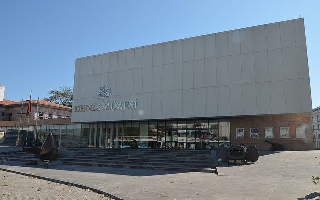
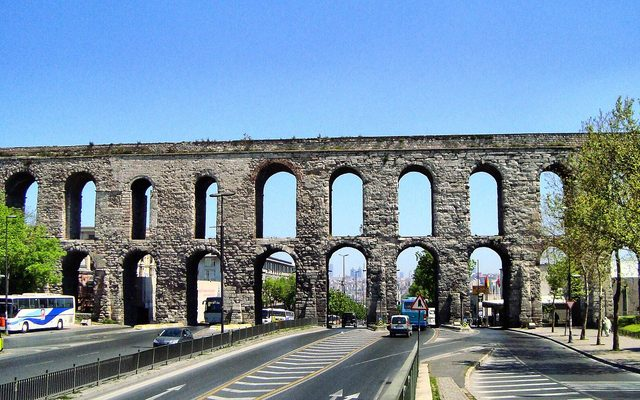

الرئيسية › أماكن تستحق الزيارة حسب الولاية › إسطنبول
يضم دليل Kültür Varlıkları 89 مكانًا في إسطنبول: 52 متحف, 21 قلعة ومبنى تاريخي, 14 مبنى ديني, 2 موقع أثري. ستجد أدناه أبرز الأماكن وخريطة والقائمة الكاملة.
⭐ أبرز الأماكن

1 · إسطنبول · متحفمتاحف إسطنبول الأثرية
أُسست متاحف إسطنبول الأثرية، في غولهانه ضمن الحدائق الخارجية لقصر طوب قابي، أول متحف حديث في الدولة العثمانية.

2 · إسطنبول · متحفمتحف فسيفساء القصر الكبير
يعرض متحف فسيفساء القصر الكبير، تحت سوق أراستا في السلطان أحمد مباشرة، أروع بقايا القصر الكبير الذي عاش فيه الأباطرة البيزنطيون قرونًا.

3 · إسطنبول · متحفمتحف الجزر
افتُتح عام 2010 في حظيرة قديمة في بيوك أدا، ويروي تاريخ جزر الأمراء: من منفى بيزنطي إلى حياة الصيف بالعربات التي تجرها الخيول ومجتمع الجزيرة متعدد الثقافات، عبر الصور…
🗺 على الخريطة
📍 جميع الأماكن (89)
متحف (52)
متاحف إسطنبول الأثريةمتحفمتحف فسيفساء القصر الكبيرمتحفمتحف الجزرمتحف متحف آدم ميتسكيفيتشمتحف
متحف آدم ميتسكيفيتشمتحف متحف آرا غولرمتحف
متحف آرا غولرمتحف آرترمتحف
آرترمتحف المتحف العسكريمتحف
المتحف العسكريمتحف متحف أتاتورك (شيشلي)متحف
متحف أتاتورك (شيشلي)متحف متحف أطلس 1948 للسينما في إسطنبولمتحف
متحف أطلس 1948 للسينما في إسطنبولمتحف متحف آيا صوفيا للتاريخ والتجربةمتحف
متحف آيا صوفيا للتاريخ والتجربةمتحف متحف ثقافة الحمّام في بايزيدمتحف
متحف ثقافة الحمّام في بايزيدمتحف متحف الزجاج والبلور في بيكوزمتحف
متحف الزجاج والبلور في بيكوزمتحف متحف جندره للفنونمتحف
متحف جندره للفنونمتحف متحف إلغيز للفن المعاصرمتحف
متحف إلغيز للفن المعاصرمتحف متحف فنربخشةمتحف
متحف فنربخشةمتحف متحف فتحيةمتحف
متحف فتحيةمتحف كشك أتاتورك البحري في فلوريامتحف
كشك أتاتورك البحري في فلوريامتحف متحف التكية المولوية في غلطةمتحف
متحف التكية المولوية في غلطةمتحف متحف ذاكرة 15 يوليومتحف
متحف ذاكرة 15 يوليومتحف متحف كمال سونالمتحف
متحف كمال سونالمتحف متحف كاظم قره بكر باشامتحف
متحف كاظم قره بكر باشامتحف متحف البراءةمتحف
متحف البراءةمتحف بيت محمد عاكف أرصوي التذكاريمتحف
بيت محمد عاكف أرصوي التذكاريمتحف ميني توركمتحف
ميني توركمتحف متحف غازهانةمتحف
متحف غازهانةمتحف متحف أورهان كمالمتحف
متحف أورهان كمالمتحف متحف بانوراما 1453متحف
متحف بانوراما 1453متحف متحف بيرامتحف
متحف بيرامتحف متحف بيير لوتيمتحف
متحف بيير لوتيمتحف متحف رحمي م. كوتشمتحف
متحف رحمي م. كوتشمتحف متحف رزان هاسمتحف
متحف رزان هاسمتحف متحف صادبرك هانممتحف
متحف صادبرك هانممتحف متحف سعيد فائق أباسيانيقمتحف
متحف سعيد فائق أباسيانيقمتحف متحف صاقب صبانجيمتحف
متحف صاقب صبانجيمتحف سالت غلطةمتحف
سالت غلطةمتحف متحف فنون الخط للأوقاف التركيةمتحف
متحف فنون الخط للأوقاف التركيةمتحف متحف الآثار التركية والإسلاميةمتحف
متحف الآثار التركية والإسلاميةمتحف متحف بنك إشمتحف
متحف بنك إشمتحف متحف يحيى كمالمتحف
متحف يحيى كمالمتحف مصنع يلدز للخزف والبورسلينمتحف
مصنع يلدز للخزف والبورسلينمتحف متحف الطاقة سانترال إسطنبولمتحف
متحف الطاقة سانترال إسطنبولمتحف متحف التبادل في تشاتالجامتحف
متحف التبادل في تشاتالجامتحف متحف تاريخ العلوم والتكنولوجيا في الإسلاممتحف
متحف تاريخ العلوم والتكنولوجيا في الإسلاممتحف متحف منزل عصمت إينونومتحف
متحف منزل عصمت إينونومتحف
متحف إسطنبول البحريمتحف متحف الطيران في إسطنبولمتحف
متحف الطيران في إسطنبولمتحف متحف إسطنبول للفن الحديثمتحف
متحف إسطنبول للفن الحديثمتحف متحف إسطنبول للألعابمتحفمتحف هلمي نقيب أوغلو للكاميراتمتحفمتحف هيسارت للتاريخ الحي والديورامامتحفمتحف الزلازل في قنديليمتحفمتحف مطار إسطنبولمتحف
متحف إسطنبول للألعابمتحفمتحف هلمي نقيب أوغلو للكاميراتمتحفمتحف هيسارت للتاريخ الحي والديورامامتحفمتحف الزلازل في قنديليمتحفمتحف مطار إسطنبولمتحفقلعة ومبنى تاريخي (21)
 قلعة الأناضول (أناضولو حصاري)قلعة ومبنى تاريخي
قلعة الأناضول (أناضولو حصاري)قلعة ومبنى تاريخي قصر آينالي قاواكقلعة ومبنى تاريخي
قصر آينالي قاواكقلعة ومبنى تاريخي قصر بيلربييقلعة ومبنى تاريخي
قصر بيلربييقلعة ومبنى تاريخي صهريج بين بير ديرك (فيلوكسينوس)قلعة ومبنى تاريخي
صهريج بين بير ديرك (فيلوكسينوس)قلعة ومبنى تاريخي
قناطر بوزدوغان (قناة فالنس)قلعة ومبنى تاريخي قصر دولمه بهتشهقلعة ومبنى تاريخي
قصر دولمه بهتشهقلعة ومبنى تاريخي قصر الزيزفون (إيهلامور)قلعة ومبنى تاريخي
قصر الزيزفون (إيهلامور)قلعة ومبنى تاريخي قصر كوتشوك صوقلعة ومبنى تاريخي
قصر كوتشوك صوقلعة ومبنى تاريخي برج الفتاةقلعة ومبنى تاريخي
برج الفتاةقلعة ومبنى تاريخي أكشاك مسلكقلعة ومبنى تاريخي
أكشاك مسلكقلعة ومبنى تاريخي ثكنة رامي (مكتبة رامي)قلعة ومبنى تاريخي
ثكنة رامي (مكتبة رامي)قلعة ومبنى تاريخي قلعة روملي حصارقلعة ومبنى تاريخي
قلعة روملي حصارقلعة ومبنى تاريخي أسوار ثيودوسيوسقلعة ومبنى تاريخي
أسوار ثيودوسيوسقلعة ومبنى تاريخي قصر طوب قابيقلعة ومبنى تاريخي
قصر طوب قابيقلعة ومبنى تاريخي قلعة يدي قولهقلعة ومبنى تاريخي
قلعة يدي قولهقلعة ومبنى تاريخي صهريج البازيليك (يرَبطان)قلعة ومبنى تاريخي
صهريج البازيليك (يرَبطان)قلعة ومبنى تاريخي قصر يلدزقلعة ومبنى تاريخي
قصر يلدزقلعة ومبنى تاريخي عمود قسطنطين (جمبرلي طاش)قلعة ومبنى تاريخي
عمود قسطنطين (جمبرلي طاش)قلعة ومبنى تاريخي برج غلطةقلعة ومبنى تاريخي
برج غلطةقلعة ومبنى تاريخي صهريج شريفية (ثيودوسيوس)قلعة ومبنى تاريخيصهريج فيلداميقلعة ومبنى تاريخي
صهريج شريفية (ثيودوسيوس)قلعة ومبنى تاريخيصهريج فيلداميقلعة ومبنى تاريخيمبنى ديني (14)
 كنيس أهريدامبنى ديني
كنيس أهريدامبنى ديني كنيسة آيا إيرينيمبنى ديني
كنيسة آيا إيرينيمبنى ديني جامع آيا صوفيا الكبيرمبنى ديني
جامع آيا صوفيا الكبيرمبنى ديني كنيسة القديس استفانوس البلغارية (الكنيسة الحديدية)مبنى ديني
كنيسة القديس استفانوس البلغارية (الكنيسة الحديدية)مبنى ديني جامع أبي أيوب الأنصاريمبنى ديني
جامع أبي أيوب الأنصاريمبنى ديني البطريركية المسكونية وكنيسة القديس جاورجيوسمبنى ديني
البطريركية المسكونية وكنيسة القديس جاورجيوسمبنى ديني جامع كاريه (خورا)مبنى ديني
جامع كاريه (خورا)مبنى ديني جامع مهرماه سلطان (أدرنة قابي)مبنى ديني
جامع مهرماه سلطان (أدرنة قابي)مبنى ديني جامع رستم باشامبنى ديني
جامع رستم باشامبنى ديني كنيسة القديس أنطونيوس البادويمبنى ديني
كنيسة القديس أنطونيوس البادويمبنى ديني جامع السلطان أحمد (الجامع الأزرق)مبنى ديني
جامع السلطان أحمد (الجامع الأزرق)مبنى ديني جامع السليمانيةمبنى ديني
جامع السليمانيةمبنى ديني جامع إمراهور إلياس بك (دير ستوديوس)مبنى ديني
جامع إمراهور إلياس بك (دير ستوديوس)مبنى ديني جامع شهزادهمبنى ديني
جامع شهزادهمبنى ديني